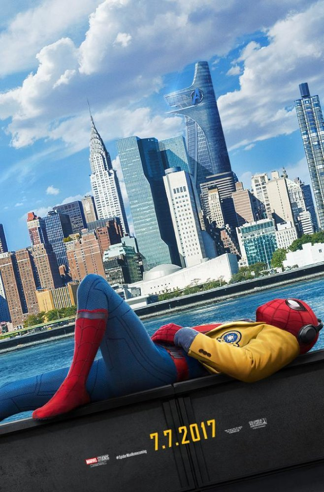

Movies page

Steven Jobs:The Man in the Machine(2015)
Director: Alex Gibney
Writer: Alex Gibney
Stars: Bob Belleville, Chrisann Brennan, Nolan Bushnell
Details:
Official Sites: Official Facebook
Country: USA
Language: English
Release Date: 4 September 2015 (USA)
Also Known As: Steve Jobs: Bilgisayarin Içindeki Adam
Filming Locations: San Francisco, California, USA
Storyline:
In his signature black turtleneck and blue jeans, shrouded in shadows below a milky
apple, Steve Jobs' image was ubiquitous. But who was the man on the stage? What
accounted for the grief of so many across the world when he died? From Oscar-winning
director Alex Gibney, 'Steve Jobs: The Man In The Machine' is a critical examination
of Jobs who was at once revered as an iconoclastic genius and a barbed-tongued
tyrant. A candid look at Jobs' legacy featuring interviews with a handful of those
close to him at different stages in his life, the film is evocative and nuanced in
capturing the essence of the Apple legend and his values which shape the culture of
Silicon Valley to this day.

Spider-Man Homecoming
Director: Jon Watts
Writers: Jonathan Goldstein (screenplay by), John Francis Daley (screenplay by)
Stars: Tom Holland, Michael Keaton, Robert Downey Jr.
Details:
Official Sites: Official Facebook
Country: USA
Language: English , Spanish
Release Date: 7 July 2017 (USA)
Also Known As: The Summer of George
Filming Locations: Atlanta, Georgia, USA
Storyline:
Thrilled by his experience with the Avengers, Peter returns home, where he lives with
shis Aunt May, under the watchful eye of his new mentor Tony Stark, Peter tries to
fall back into his normal daily routine - distracted by thoughts of proving himself
to be more than just your friendly neighborhood Spider-Man - but when the Vulture
emerges as a new villain, everything that Peter holds most important will be
threatened. Written by Benett Sullivan.

John Wick 2
Director: Chad Stahelski
Writers: Derek Kolstad, Derek Kolstad (based on characters created by)
Stars: Keanu Reeves, Riccardo Scamarcio, Ian McShane .
Details:
Official Sites: Official Facebook .
Country: USA | Hong Kong
Language: English | Italian | Russian
Release Date: 10 February 2017 (USA)
Also Known As: John Wick 2 .
Filming Locations: New York, USA .
Storyline:
After returning to the criminal underworld to repay a debt, John Wick discovers that
a large bounty has been put on his life.

Wrong Turn 6: Last Resort
Director: Valeri Milev
Writer: Frank H. Woodward
Stars: Anthony Ilott, Chris Jarvis, Aqueela Zoll
Details:
Country: USA
Language: English
Release Date: 13 October 2014 (USA)
Also Known As: Pogrešno Skretanje 6: Posljednje Utočište .
Filming Locations: Bulgaria
Storyline:
A sudden and mysterious inheritance brings Danny and his friends to Hobb Springs,
a forgotten resort deep in the West Virginia hills. Hobb Springs is being looked
after under the watchful care of Jackson and Sally Written.
Go to home page